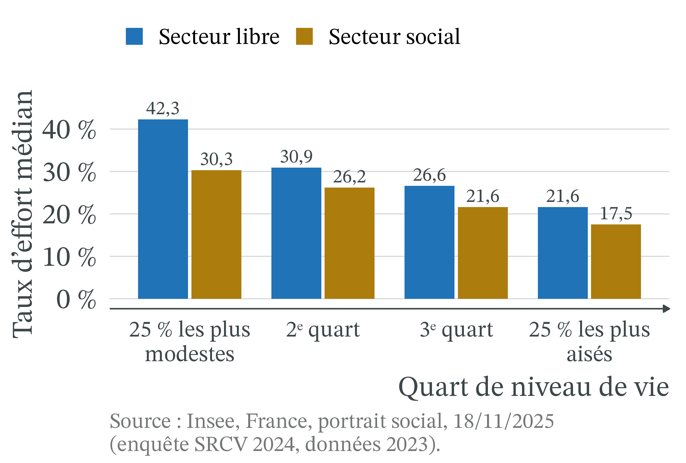
Faut-il encadrer les loyers ?
CM 4 · Partie I · Marchés, prix et régulations
ATER en économie, Université Clermont Auvergne
Le fait de départ : le plafonnement des loyers des nouveaux baux (2019)
- Depuis le 1er juillet 2019 à Paris, puis à Lille, Lyon, Montpellier, Bordeaux et dans plusieurs communes de Seine-Saint-Denis, le loyer d’un nouveau bail est plafonné par le préfet : 9 territoires et 70 communes en octobre 2026.
- Conséquences : loyers des annonces −2 à −5 % selon les villes (Chapelle et Fack, mai 2026).
Fin de l’expérimentation le 23/11/2026. Question de la séance : faut-il encadrer les loyers ?
Sources : Chapelle et Fack, rapport de la mission d’évaluation, mai 2026 ; Sénat, octobre 2026.
Taux d’effort : le logement pèse lourd sur les locataires modestes
- Taux d’effort : part du revenu consacrée au logement, aides au logement déduites.
- Secteur libre, 2023 : la moitié des locataires dépassent 29,6 %.
- Pour les 25 % les plus modestes : 42,3 %, environ deux fois plus que les plus aisés.
Rappel (1/2) : équilibre, prix plafond et prix plancher
- Offre, demande, équilibre : la quantité offerte augmente avec le prix, la quantité demandée diminue. Au prix d’équilibre P*, elles sont égales, à Q*.
- Prix plafond, prix plancher : un prix maximal (plafond) ou minimal (plancher) imposé, en général par la loi. L’encadrement des loyers est un prix plafond ; le SMIC est un prix plancher du travail.
Rappel (2/2) : rationnement, consentement à payer, élasticité de l’offre
- Pénurie et rationnement : quand le prix ne peut pas monter jusqu’à P*, la quantité demandée dépasse la quantité offerte ; on répartit alors le bien autrement : file d’attente, dossier, quota, relations, hasard.
- Consentement à payer : le prix maximal qu’un acheteur accepte de payer ; c’est la hauteur de la demande.
- Élasticité de l’offre : une offre rigide réagit peu au prix.
- Positif et normatif : décrire ce qui est, ou juger ce qui devrait être.
Friedman et Stigler (1946) : un plafond ne supprime pas la rareté
 1976 · UPI, domaine public, Wikimedia Commons
1976 · UPI, domaine public, Wikimedia Commons
Milton Friedman et George J. Stigler (1946), Roofs or Ceilings? · école de Chicago (néoclassique). Les plafonds de loyer ne font pas disparaître le manque de logements : ils remplacent la répartition par le prix par une répartition « par le hasard et le favoritisme », et découragent l’offre.
Plafonds et pénurie, écrivent-ils, se perpétuent l’un l’autre.
San Francisco, 1906 et 1946 : sous plafond, la rareté devient file d’attente

Jefferson Square, vers avril 1906 · auteur non identifié, domaine public, NARA, Wikimedia Commons
- 1906, après le séisme, sans plafond : 1 recherche de logement pour 10 offres dans les petites annonces.
- 1946, sous plafond : 375 recherches pour 10 offres.
- La rareté se voit dans les files d’attente, plus dans le prix.
Prix plafond contraignant : définition et portée
Définition 1 (Prix plafond contraignant) Un prix plafond, noté Pmax, est contraignant s’il est fixé sous le prix d’équilibre P*. Il empêche alors le prix d’atteindre P*. Un plafond fixé au-dessus de P* n’a aucun effet : le prix d’équilibre le respecte déjà.
- Dans l’exemple chiffré de la séance, Pmax = 800 € est 20 % sous P* = 1 000 € : contraignant.
- En France, le plafond est fixé au-dessus du loyer médian : pour un logement loué à ce loyer, il ne contraint pas.
Surplus du consommateur, surplus du producteur : définition
Définition 2 (Surplus du consommateur, surplus du producteur) Le surplus du consommateur additionne, pour tous les acheteurs, l’écart entre le prix maximal que chacun était prêt à payer et le prix payé : c’est l’aire entre la courbe de demande et le prix. Le surplus du producteur est l’aire entre le prix et la courbe d’offre.
Leur somme, le surplus total, mesure le gain que l’échange procure à l’ensemble des participants.
Perte sèche : définition
Définition 3 (Perte sèche) La perte sèche est la baisse du surplus total par rapport à la quantité d’équilibre concurrentiel, celle qui rend le surplus total le plus grand.
- Une intervention écarte le marché de son équilibre : des échanges n’ont plus lieu.
- Pourtant, l’acheteur était prêt à payer plus que ce que le bien coûtait au vendeur : ce gain disparaît pour tout le monde.
Offre de logements : rigide à court terme, souple à long terme
- Court terme : le parc est donné ; un bailleur ne fait pas disparaître son appartement parce que le loyer baisse. L’offre est peu élastique.
- Long terme : il peut vendre à un ménage qui l’habitera, louer en meublé de tourisme ou moins entretenir ; les investisseurs construisent moins de logements à louer. L’offre devient plus élastique.
L’encadrement : « un instrument redistributif à court terme, mais générateur de rationnement, de pertes de bien-être et de mauvaise allocation à long terme » (Chapelle et Fack, mai 2026, § 3.1.1).
Du plafond à la pénurie : une chaîne causale selon l’horizon
| Étape | Court terme | Long terme |
|---|---|---|
| 1. Pmax sous P* | Le loyer des nouveaux baux baisse | Il reste bas |
| 2. Offre | Quasi nulle : parc donné | Ventes, meublés, moins d’entretien et de construction |
| 3. Demande | La quantité demandée augmente | Elle reste élevée |
| 4. Résultat | Pénurie modérée | Pénurie et perte sèche plus fortes |
Lecture : la ligne 1 est la même aux deux horizons ; ce qui change, c’est la ligne 2, donc l’ampleur de la pénurie.
Diamond, McQuade et Qian (2019) : San Francisco, offre locative −15 %
Rebecca Diamond, Tim McQuade et Franklin Qian (2019), American Economic Review · économie empirique. En 1994, une loi étend l’encadrement à une partie des immeubles de San Francisco, et pas aux autres : on peut comparer les deux groupes.
- Les locataires protégés déménagent 20 % moins souvent.
- Les bailleurs concernés réduisent de 15 % l’offre de logements à louer, ce qui a probablement fait monter les loyers du marché à long terme.
Autor, Palmer et Pathak (2014) : la fin de l’encadrement à Cambridge
 2015 · Niccolò Caranti, CC BY-SA 4.0, Wikimedia Commons
2015 · Niccolò Caranti, CC BY-SA 4.0, Wikimedia Commons
David H. Autor, Christopher J. Palmer et Parag A. Pathak (2014), Journal of Political Economy · économie empirique. Fin soudaine d’un encadrement strict à Cambridge (Massachusetts) en 1995.
- Environ 1,8 milliard de dollars ajoutés à la valeur des logements de la ville entre 1994 et 2004, selon le résumé du document de travail (2012).
- Plus de la moitié sur des logements voisins, jamais encadrés.
Évaluations américaines : un cas différent du dispositif français
- États-Unis : dispositifs anciens, appliqués pendant des décennies, avec des loyers parfois très inférieurs à ceux du marché.
- France : dispositif récent, plafond au-dessus du loyer médian, mais appliqué à tous les nouveaux baux, y compris dans le neuf.
- Évaluation de référence : le rapport de Guillaume Chapelle et Gabrielle Fack (mai 2026), deux professeurs d’économie appuyés par deux inspections de l’État ; un rapport public, pas un article de revue.
Prix plafond (1/4) : l’équilibre initial E du marché locatif
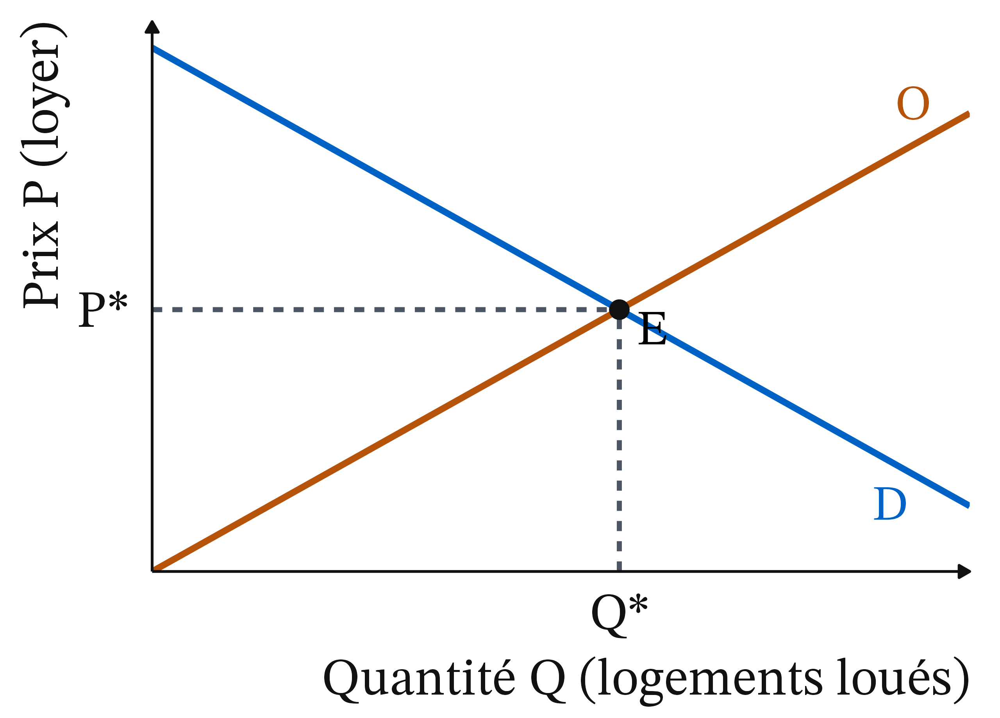
- Demande D : plus le loyer monte, moins on demande de logements.
- Offre O : plus il monte, plus les bailleurs en proposent.
- En E, au loyer P*, offre et demande sont égales, à Q* logements.
Prix plafond (2/4) : Pmax sous P*, la quantité louée tombe à Qo
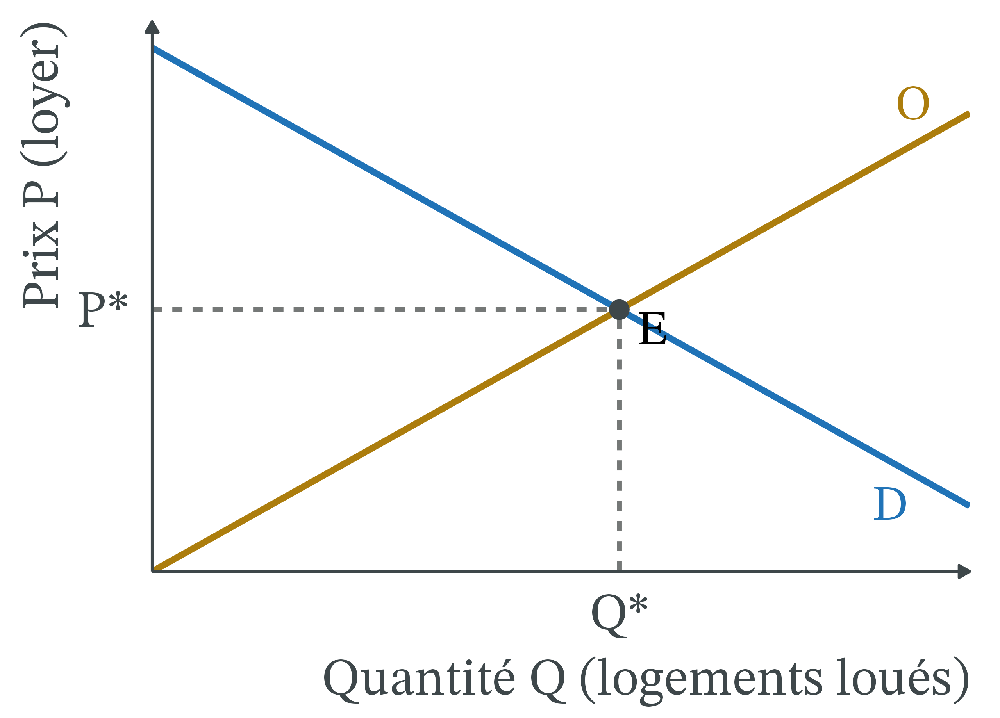
- La quantité louée baisse : au loyer Pmax, les bailleurs ne proposent que Qo. La quantité échangée est la plus petite des deux.
- La pénurie : Qd ménages cherchent un logement ; Qd − Qo ne trouvent rien.
Prix plafond (3/4) : un rectangle de transfert vers les locataires logés
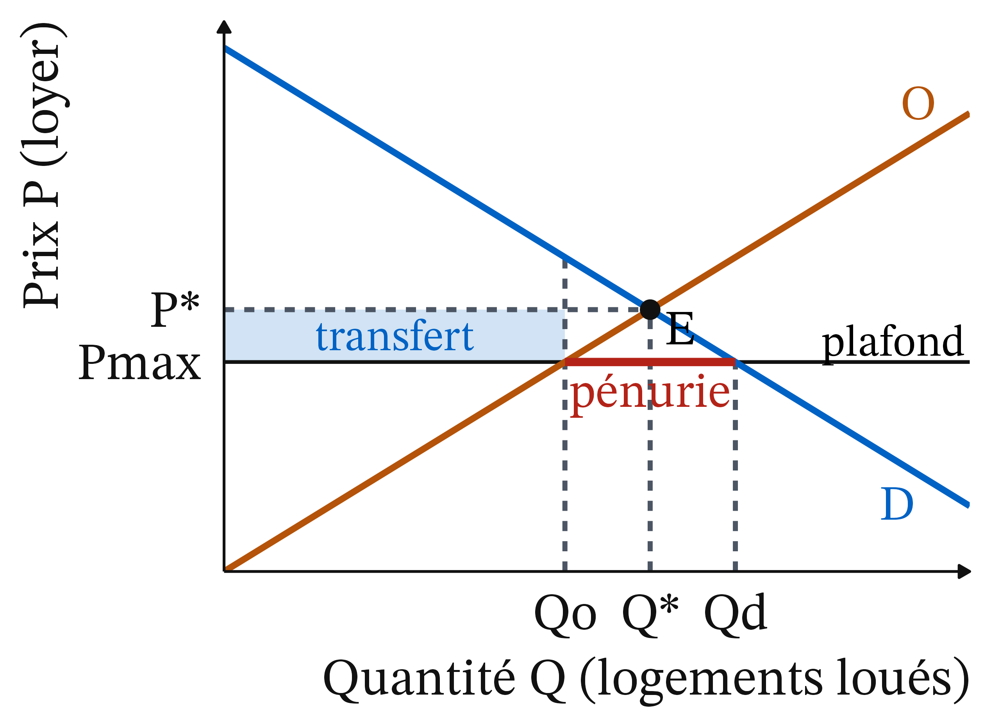
- Le transfert : les locataires logés paient Pmax au lieu de P*.
- Le rectangle bleu, Qo logements × (P* − Pmax), passe des bailleurs aux locataires.
- Ce que l’un perd, l’autre le gagne : ce n’est pas une perte pour la société.
Prix plafond (4/4) : un triangle de perte sèche, perdu pour tous

- La perte sèche : entre Qo et Q*, des logements ne sont plus loués.
- Pourtant, la demande y est au-dessus de l’offre : des ménages étaient prêts à payer plus que leur coût pour les bailleurs.
Point d’attention : le transfert n’est pas une perte sèche
Confondre le transfert et la perte sèche. Le rectangle bleu n’est pas une perte pour la société : il change de poche, des bailleurs vers les locataires logés.
- Seul le triangle rouge est une perte nette.
- Mesurer la perte sèche est une question positive.
- Juger ce transfert, souhaitable ou non, est une question normative.
Exemple chiffré (1/6) : un plafond de 800 € dans une ville fictive
Q en milliers de logements, P = loyer mensuel en euros.
| Loyer P (€ par mois) | 600 | 800 | 1 000 | 1 200 |
|---|---|---|---|---|
| Quantité demandée | 140 | 120 | 100 | 80 |
| Offerte à court terme | 92 | 96 | 100 | 104 |
| Offerte à long terme | 60 | 80 | 100 | 120 |
- L’équilibre : à 1 000 €, on demande 100 et on offre 100 : P* = 1 000 €, Q* = 100 000 logements.
- Le plafond : Pmax = 800 €, 20 % sous P* : contraignant.
Exemple chiffré (2/6) : à long terme, 40 000 ménages sans logement

- À 800 €, on demande 120, on n’offre que 80 : 40 000 ménages cherchent sans trouver.
- À 1 200 €, la demande vaut 80 : le 80 000e ménage logé était prêt à payer 1 200 €.
Exemple chiffré (3/6) : un transfert de 16 M€ par mois

- Les 80 000 locataires logés paient 1 000 − 800 = 200 € de moins par mois.
- Rectangle : 80 000 × 200 = 16 millions d’euros par mois, qui passent des bailleurs aux locataires.
Exemple chiffré (4/6) : une perte sèche de 4 M€ par mois
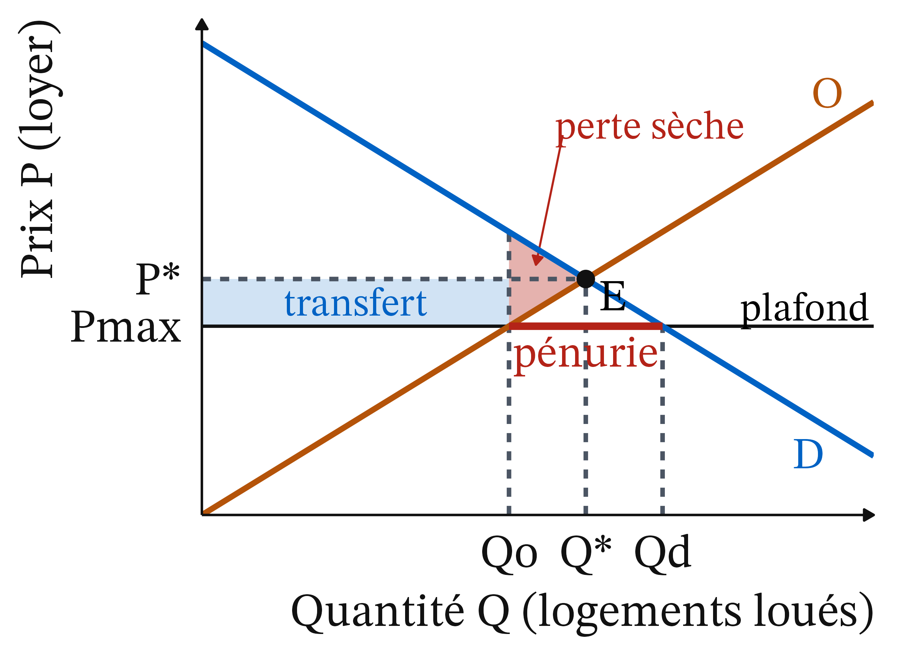
- Triangle de base 100 000 − 80 000 = 20 000 logements, de hauteur 1 200 − 800 = 400 €.
- ½ × 20 000 × 400 = 4 millions d’euros par mois, perdus pour tout le monde.
Exemple chiffré (5/6) : locataires +14 M€, bailleurs −18 M€, société −4 M€
- Le bilan, par mois :
- Les 20 000 ménages qui ne sont plus logés perdent ½ × 20 000 × (1 200 − 1 000) = 2 millions d’euros.
- Locataires : 16 − 2 = +14 millions.
- Bailleurs : perdent le transfert et le surplus des logements retirés, ½ × 20 000 × (1 000 − 800) = 2 millions : 16 + 2 = 18 millions.
- Société : perd 18 − 14 = 4 millions, la perte sèche.
Exemple chiffré (6/6) : à court terme, une pénurie de 24 000 logements
- À 800 €, on offre encore 96 : pénurie de 120 − 96 = 24 milliers de logements.
- Chaque millier de logements en moins ajoute 10 € au prix que le dernier ménage logé est prêt à payer : de 100 à 96, de 1 000 à 1 040 €.
- Perte sèche : ½ × 4 000 × (1 040 − 800) = 0,48 million d’euros par mois, environ huit fois moins.
- Transfert plus grand : 96 000 × 200 = 19,2 millions d’euros.
Même plafond, deux horizons (1/2) : pénurie de 24 000 contre 40 000
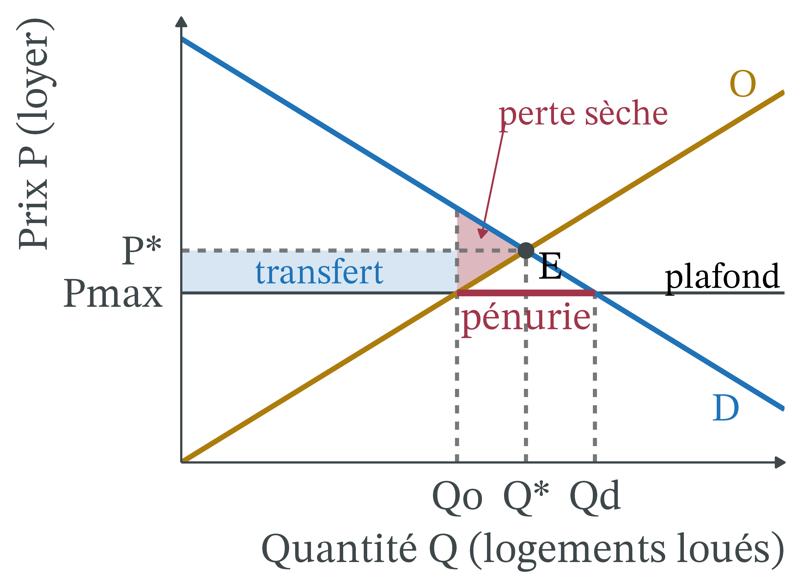
Plus l’offre réagit au prix, plus un plafond réduit le nombre de logements loués : 96 000 à court terme, 80 000 à long terme.
Même plafond, deux horizons (2/2) : une perte sèche environ huit fois supérieure
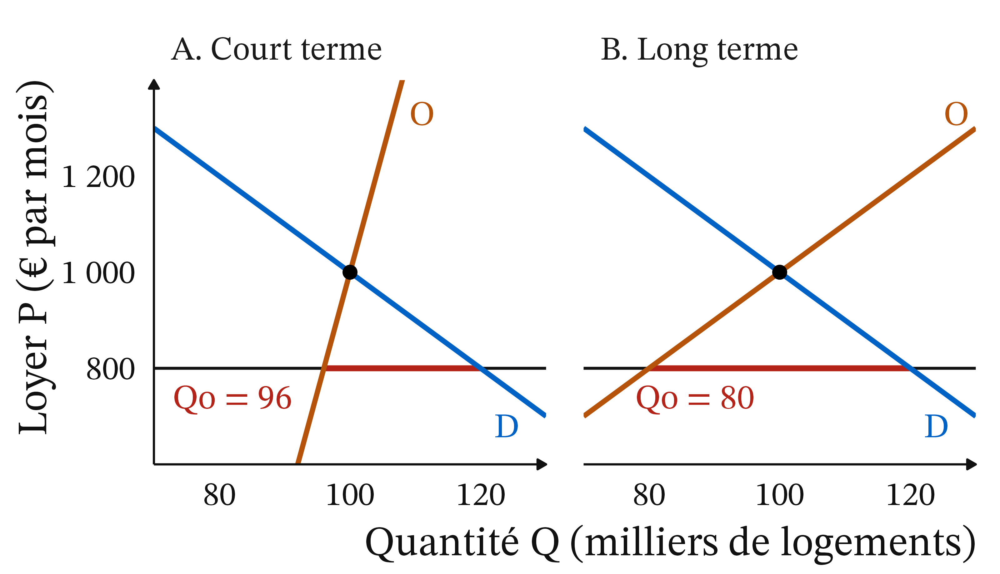
Perte sèche : 0,48 million d’euros par mois à court terme, 4 millions à long terme. Juger un encadrement sur ses deux premières années, c’est regarder le panneau A.
Point d’attention : sous rationnement, la perte dépasse le triangle
Supposer que les logements vont à ceux qui les valorisent le plus. L’exemple le suppose pour les 80 000 logements restants.
- Avec une file d’attente ou des relations, rien ne le garantit : un ménage qui tient peu à son logement le garde ; un autre, qui en aurait besoin pour un emploi, n’en trouve pas.
- La perte est alors plus grande que le triangle (Glaeser et Luttmer, 2003, cités par Chapelle et Fack, mai 2026).
Prix plancher (1/3) : le marché du travail à l’équilibre
- Le miroir du plafond : un prix plancher fixé au-dessus de P*.
- SMIC depuis le 1er juin 2026 : 12,31 € brut de l’heure, soit 1 867,02 € brut par mois pour 35 heures par semaine (Service-public.fr, consulté le 21/10/2026).
Prix plancher (2/3) : Pmin au-dessus de P*, un excès d’offre
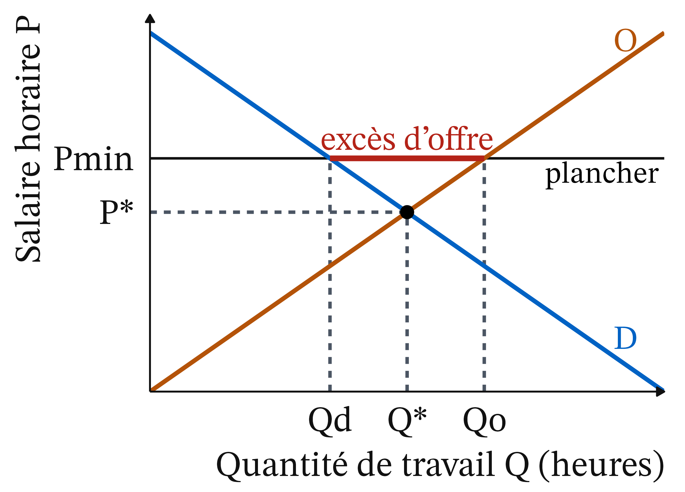
- Ici, ce sont les acheteurs, les employeurs, qui fixent la quantité échangée : Qd.
- Au salaire Pmin, les travailleurs offrent Qo heures : l’excès d’offre Qo − Qd est du chômage au sens du modèle.
Prix plancher (3/3) : perte sèche, sauf pouvoir de marché des employeurs
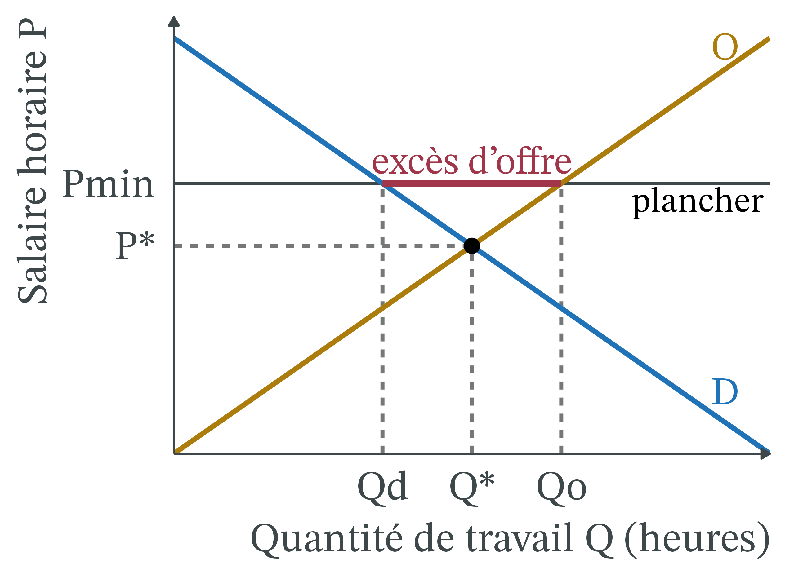
- Triangle rouge : la perte sèche.
- Le modèle suppose un marché concurrentiel. Employeur presque seul à embaucher : monopsone (Joan Robinson, 1933).
- Un salaire minimum bien placé peut alors augmenter l’emploi : question empirique.
Application (1/3) : un plafond français assez haut et souvent dépassé
- Loyer de référence : loyer médian des logements comparables (secteur, nombre de pièces, époque, vide ou meublé), fixé chaque année par le préfet.
- Plafond : le loyer de référence majoré de 20 % (Chapelle et Fack, § 1.1.1). Au loyer médian, il est au-dessus de P*.
- Dépassements : sur environ 270 000 baux (2020-2024), plus d’un tiers au-dessus du plafond : 35,6 % à Paris, 43,5 % à Bordeaux (§ 2.2.4).
Application (2/3) : une baisse des loyers de 2 à 5 %
- Méthode : comparer les communes encadrées et des communes semblables mais non encadrées, avant et après.
- Hors Île-de-France : −2 à −3 % par rapport aux communes témoins, environ −5 % après deux ans ; Seine-Saint-Denis : −3 à −4 % (§ 3.4).
- Paris : −5,2 % entre juillet 2019 et juin 2024 (Breuillé, Grivault et al., 2025, cités par le rapport).
- Pas entièrement attribuable à l’encadrement : des ménages ont quitté Paris après le Covid.
Application (3/3) : un effet sur l’offre ni démontré ni écarté
- Hors Île-de-France : nouvelles annonces, rapportées au nombre de logements, environ −8 % ; à Paris, sens inverse (§ 3.5).
- Offre réduite, locataires qui restent plus longtemps, autres canaux : les données ne permettent pas de trancher.
- Plafonds plus durs : à Berlin (9,8 € par m² au plus), de 1 500 annonces par semaine en 2019 à 300 en 2020 (Hahn et al., 2024) ; à San Francisco, offre −15 %.
Loyers effectifs, 2015-2025 : +9,72 % en France, +17,9 % en Allemagne
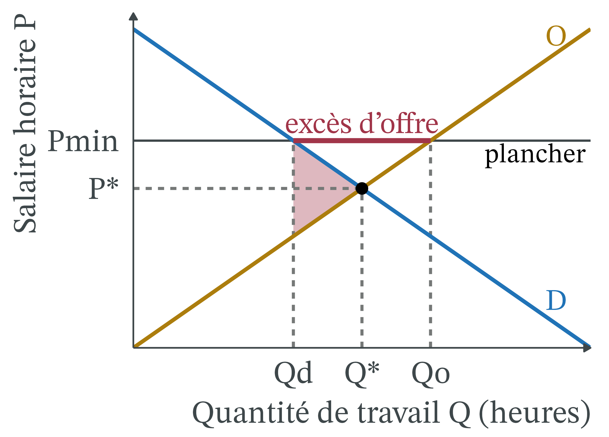
- En dix ans : France +9,72 %, Allemagne +17,9 %, zone euro +18,85 %.
- Indice de tous les loyers effectivement payés, secteur social compris, dans les communes encadrées ou non : il ne mesure pas l’effet de l’encadrement.
Point d’attention : l’écart avec l’Allemagne ne mesure pas l’encadrement
Lire un effet de l’encadrement dans ce graphique. Les loyers français montent moins vite que les loyers allemands, mais ce n’est pas la preuve d’un effet.
- L’encadrement ne couvre que 70 communes, et l’indice mêle secteur libre et social.
- Bien d’autres causes séparent les deux pays.
- Pour mesurer l’effet d’une politique : un groupe de comparaison semblable, observé avant et après.
Répartition par revenu : les bailleurs paient deux tiers, l’État un tiers
- Transferts vers les locataires : environ 700 millions d’euros par an (Chapelle et Fack, mai 2026, § 4.4.1).
- Deux tiers payés par les bailleurs, un tiers par l’État : un loyer plus bas réduit le revenu imposable du bailleur, donc son impôt (§ 5.1).
- Les bailleurs sont en moyenne parmi les ménages les plus aisés : le transfert va plutôt des riches vers les moins riches.
Répartition par revenu : un ciblage qui dépend de la ville
- Hors Île-de-France : « pour deux euros distribués aux 10 % les plus modestes, un euro est redistribué aux 10 % les plus aisés » (§ 4.4.3).
- Paris : mal ciblé, une part importante des gains va à des locataires aisés.
- Seine-Saint-Denis : les gains vont surtout aux ménages modestes.
- Gain moyen par ménage locataire : environ 500 € par an en province, 800 € à Paris.
Taux d’effort : l’encadrement ne vise pas les locataires les plus modestes
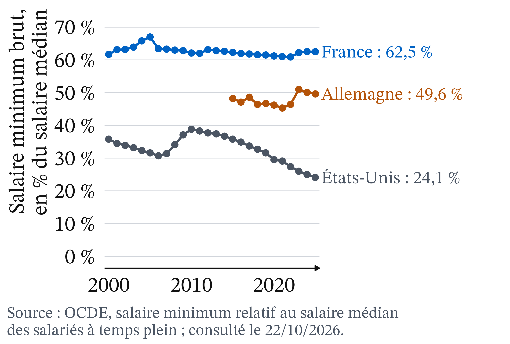
- Le loyer pèse le plus sur les locataires modestes du secteur libre : 42,3 %, contre 21,6 % pour les plus aisés.
- L’encadrement baisse le loyer des logements chers, quel que soit le revenu du locataire.
Répartition par génération et territoire : les nouveaux arrivants perdent
- Génération : le plafond protège les locataires en place ; perdants potentiels : étudiants, jeunes actifs, ménages qui déménagent pour un emploi.
- Territoire : 70 communes, où la demande dépasse nettement l’offre ; les loyers des communes voisines ne semblent pas avoir réagi à court terme (§ 3.6).
- Genre : aucune source ouverte pour cette séance ne chiffre l’effet.
Controverse : protéger les locataires d’aujourd’hui, ou ceux de demain
Analyse positive (ce qui est : mécanismes et effets, vérifiables)
- Plafond contraignant : pénurie et perte sèche, plus grandes si l’offre est élastique.
- France : loyers −2 à −5 %, environ 700 M€ transférés par an.
- Effet sur l’offre ni démontré ni écarté.
Analyse normative (ce qui devrait être : dépend de jugements de valeur)
- Efficacité ou équité ; locataires en place ou ménages de demain.
- Bailleurs ou contribuables ; prolonger ou arrêter tant que le doute subsiste.
Deux études, deux lectures : à qui revient la charge de la preuve
- Sénat, rapporteure de la commission des affaires économiques, sur le rapport de la mission : « aucune étude empirique n’a permis d’écarter l’incidence négative sur l’offre locative » (MoneyVox avec l’AFP, 14/10/2026).
- Ville de Paris, sur l’étude Apur, deux laboratoires et SeLoger : « une absence d’effet de l’encadrement des loyers sur l’offre locative parisienne » (paris.fr, 11/09/2026).
L’une : aucun effet écarté ; l’autre : aucun effet trouvé. Choisir la charge de la preuve est un jugement.
Deux modèles de l’économie standard : concurrence ou pouvoir des bailleurs
- Friedman et Stigler : marché concurrentiel ; le plafond est un prix maximal comme un autre, il crée une pénurie.
- Arnott (1995) : les logements sont si différents que les bailleurs ont un pouvoir de marché.
- Arnott et Igarashi (2000) : un encadrement modéré peut améliorer l’efficacité, s’il exempte le neuf et autorise des hausses indexées.
- Le rapport classe le dispositif français, qui n’exempte pas le neuf, en « première génération ».
Méthode : si le droit change, le raisonnement reste le même
- Prolongation ou pérennisation : l’analyse reste valable ; la question devient « faut-il l’étendre à d’autres villes ? ».
- Fin de l’expérimentation : 2019-2026 devient une étude de cas ; le modèle prédit une remontée des loyers des nouveaux baux, comme en Catalogne (§ 3.1.2.1).
Mêmes questions : le plafond est-il contraignant ? L’offre est-elle élastique ? Quels sont les effets de répartition ?
Encadrement des loyers : une expérimentation en navette au Parlement
État du droit au 21 octobre 2026. Article 140 de la loi Élan (23/11/2018) : une expérimentation, prolongée par la loi 3DS (21/02/2022) jusqu’au 23/11/2026.
- Assemblée nationale, 11/12/2025 : pérennisation et extension votées, 105 voix contre 56 (LCP).
- Sénat : texte réduit en commission à une prolongation de deux ans (14/10/2026), adopté en séance le 21/10/2026 ; retour à l’Assemblée en deuxième lecture (Sénat, La loi en clair).
À retenir
- Un prix plafond n’a d’effet que s’il est fixé sous le prix d’équilibre.
- Un plafond contraignant crée une pénurie : les logements se répartissent hors du prix.
- Le rectangle est un transfert des bailleurs aux locataires logés ; le triangle, une perte sèche.
- Plus l’offre est élastique, plus pénurie et perte sèche sont grandes.
- France : loyers −2 à −5 %, ciblage variable, effet sur l’offre ni démontré ni écarté.
- Le SMIC est le miroir du plafond : un plancher crée un excès d’offre, sauf si les employeurs ont un pouvoir de marché.
Plan de dissertation : ce que dit l’outil, ce qu’il ne tranche pas
Sujet : faut-il encadrer les loyers ?
I. Ce que dit l’outil (positif)
- A. Un plafond contraignant crée pénurie et perte sèche, croissantes avec l’élasticité de l’offre.
- B. En France : loyers −2 à −5 %, environ 700 M€ transférés par an, effet sur l’offre ni démontré ni écarté.
II. Ce qu’il ne tranche pas (normatif)
- A. Efficacité ou équité ; locataires en place ou ménages de demain.
- B. Bailleurs ou contribuables ; à qui revient la charge de la preuve.
CM 4 · Loyers